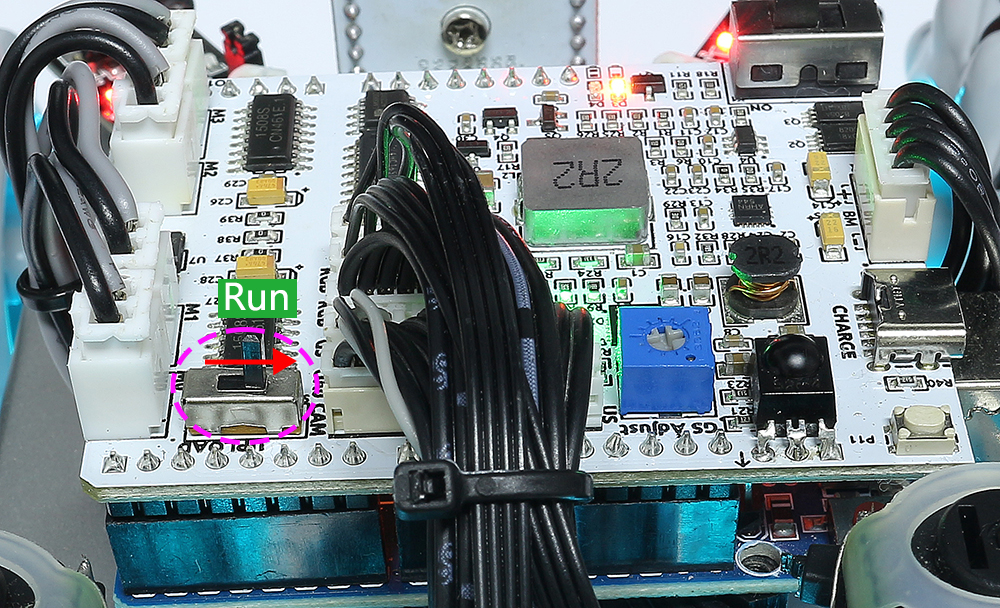
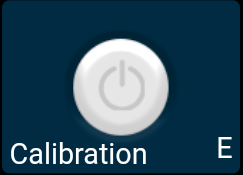
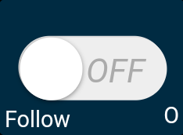

17. APP Control Plus¶
This project integrates Line Track, Follow, Avoid functions based on 16. APP Control.
Note
Please install SunFounder Controller from APP Store(iOS) or Google Play(Android).
How to do?
First check that the Upload button is toggled to the side near the motor port.
Open the
17_app_control_plus.inofile under the path ofzeus-car-main\examples\17_app_control_plus. Or copy this code into Arduino IDE.<代码>
After the code is uploaded successfully, slide the power switch to ON to start the Zeus Car.
Toggle the Upload Switch to the side of Run (right side on this diagram) to start the ESP32 CAM.
Press the reset button to get the Arduino board’s program running again.

Connect to
Zeus_CarWLAN.Find
Zeus_Caron the WLAN of the mobile phone (tablet), enter the password12345678and connect to it.

The default connection mode is AP mode. So after you connect, there will be a prompt telling you that there is no Internet access on this WLAN network, please choose to continue connecting.

Create a controller.
To add a controller on SunFounder Controller, click the + icon.

Preset controllers are available for some products, here we choose Zeus Car.

Give it a name and click Confirm.

You are now inside the controller, which already has several widgets set up. Click the
 button in the upper right corner.
button in the upper right corner.
The next step is to connect the Zeus Car to your device via the
 button. Wait a few seconds and
button. Wait a few seconds and Zeus_Car(IP)will appear, click on it to connect.
Note
Please make sure your Wi-Fi is connected to
Zeus_Car, if you are not seeing the above message for a long time.
Run the Controller.
After the “Connected Successfully” message appears, click the
 button, then the camera footage will appear on the app, and now you can control your Zeus Car with these widgets.
button, then the camera footage will appear on the app, and now you can control your Zeus Car with these widgets.
Here are the functions of the widgets.
Calibration(E): Turn on compass calibration.
Stop(F): Stop all movements of the car.
Set Heading(I): After placing the car in one direction with your hand, click on this widget to make this direction as the front of the car movement. This allows you to quickly specify a direction instead of slowly rotating the car to that direction with other widgets.
Drift Enable(J): Activate the drift function.
Move in All Directions(K): Control the car to move in all directions.
Speech(M): This widget is not available in this project because no code has been written for it.
Line(N): Switching to line track mode.
Follow(O): Switching to follow mode.
Avoid(p): Switch to obstacle avoidance mode.
Control the Drection(Q): Used to control the head direction.
Calibration(E)¶
Turn on compass calibration by clicking the  button.
{kind=link}
Place the Zeus car on the ground. Upon turning on the compass calibration, the car will start rotating counterclockwise and will stop in about 1 minute. If it rotates longer than 2 minutes, the magnetic field here is complicated. Try changing the location and calibrating again.
Drift Enable(J)¶
Click the  button to enable the drift function.
button to enable the drift function.
By sliding the widget counterclockwise, you will see Zeus Car drift to the right. Upon releasing the hand, the car will stop at its current position.

Similarly, if you slide the widget clockwise, the Zeus Car will drift to the left and stop in the current position.
{kind=link}

Move in All Directions(K)¶
The Zeus Car will move in the appropriate direction when you swipe the  widget.
widget.

The car moves once every time you slide, so if you don’t release your hand all the time, the car keeps moving.

Line(N)¶
Click on the  widget to switch to the line track mode.
widget to switch to the line track mode.
Two modes of line track are available on the Zeus Car, one with its head always facing the direction of movement and one with its head facing a fixed direction. Here, the second mode is selected.
Stick a 3cm wide line
There are eight sensors on the Omni grayscale module, and the distance between each sensor is between 2 and 3 cm. There must be two sensors to detect the black line simultaneously. Therefore, the line you stick must be at least 3cm wide and the bend angle should not be less than 90°.

Calibrate the Omni Grayscale module.
Since each subfloor has different grayscale values, the factory-set grayscale threshold may not be appropriate for your current environment, so you will need to calibrate this module before use. It is recommended that you need to calibrate it whenever the floor color changes a lot.
Place the Zeus Car on white surface and turn the potentiometer until the gray sensor light is just illuminated.

Now let the two greyscale sensors on the side be located just between the black line and white surface, and slowly turn the potentiometer until the signal indicator just goes off.

You can move repeatedly over the the black line and white surface to make sure that the lights of the greyscale sensor are off when they are between the the black line and white surface and on when they are on the white surface, indicating that the module is successfully calibrated.
Place the Zeus Car on your stickied line, click the
widget, and it will track the line.Due to the high environmental requirements of the Omni grayscale module, it is recommended to calibrate it a few more times if the tracking effect is not satisfactory (off-track).
Follow(O)¶
Click the  widget to switch to follow mode.
{kind=link}
The ultrasonic sensor detects obstacles in front (20 cm) and follows them forward. These two obstacle avoidance modules allow the car to follow left or right, but they need to be calibrated (15cm) before use.
Calibrate the IR obstacle avoidance module.
Place an obstacle about 15cm away from the IR obstacle avoidance module.
On the module are two potentiometers, one to adjust the sending power and one to adjust the sending frequency. By adjusting these two potentiometers, you can adjust the detection distance.
Then you can adjust a potentiometer, and if at 15cm, the signal light on the module illuminates, the adjustment is successful; if it doesn’t, adjust another potentiometer.

Calibrate the other obstacle avoidance module in the same way.
Place Zeus car on a table or the ground and let it follow your hand or other obstacles.
Avoid(p)¶
When you want to go into obstacle avoidance mode, click the  widget, but first reference the Follow(O) to calibrate the two obstacle avoidance modules.
widget, but first reference the Follow(O) to calibrate the two obstacle avoidance modules.
Zeus car will move forward.
An ultrasonic module detects obstacles in front, if detected, the car turns left.
When the left obstacle avoidance module detects an obstacle, the car turns right, and when the right obstacle avoidance module detects an obstacle, the car turns left.
Control the Drection(Q)¶
When the
button is on, the widget is used to make the Zeus Car drift left and right.When the
widget is off, the widget is used to control the direction of the car’s head.By sliding the widget counterclockwise, the car will also rotate counterclockwise. Upon releasing the hand, the head of the car will back to the original direction.
Similarly the car will rotate clockwise with the widget and return to the original direction when released.

{kind=link}